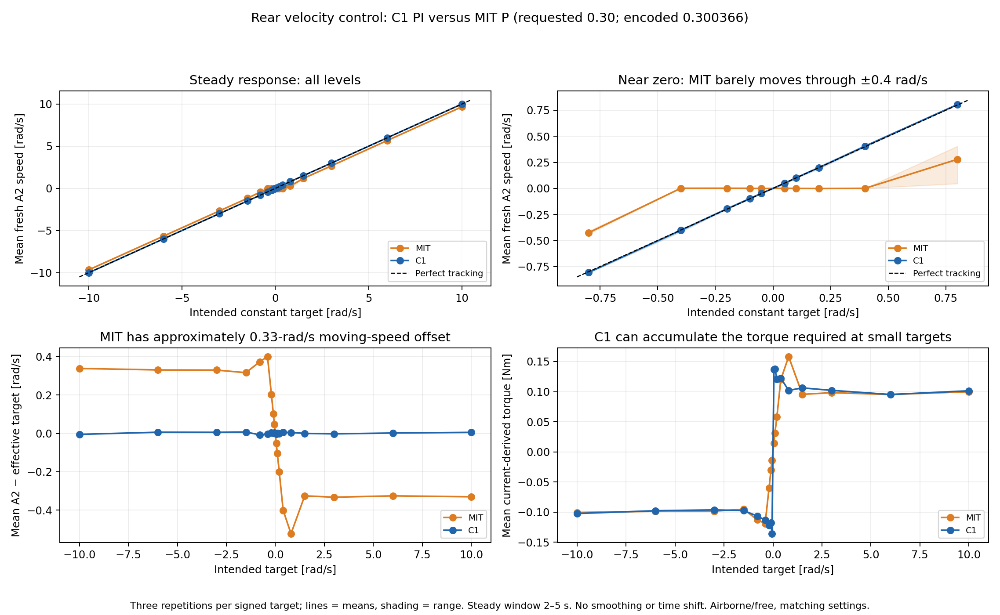
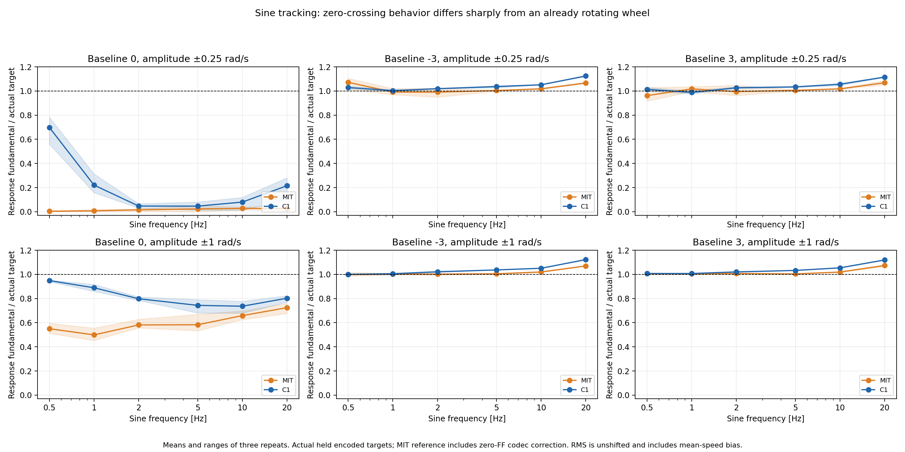
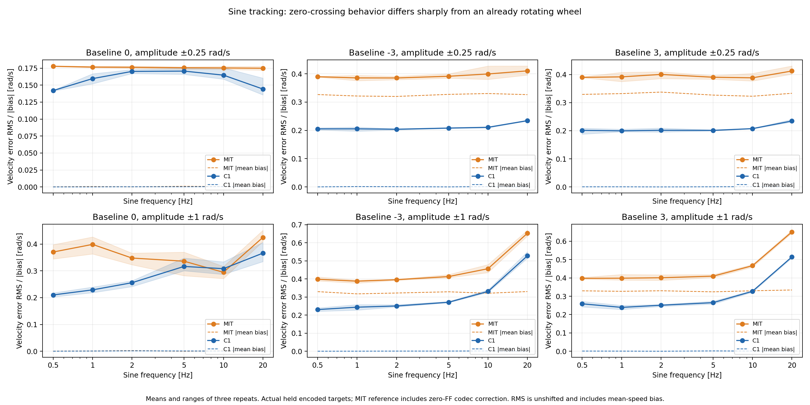
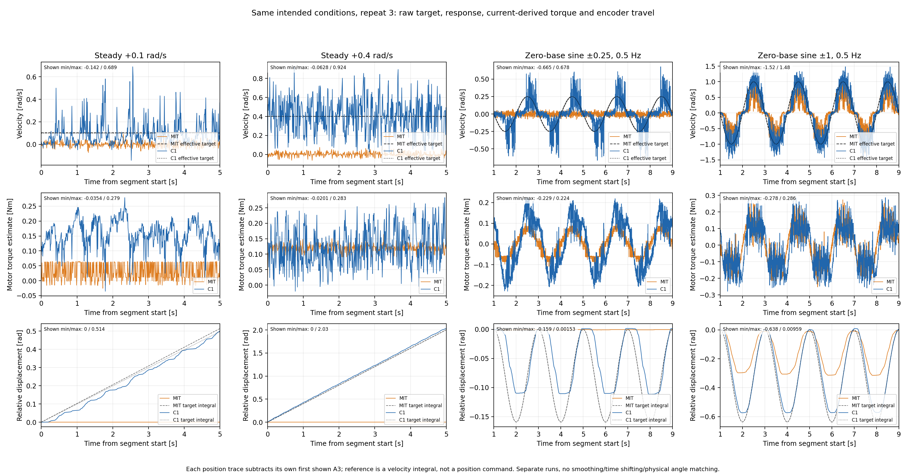
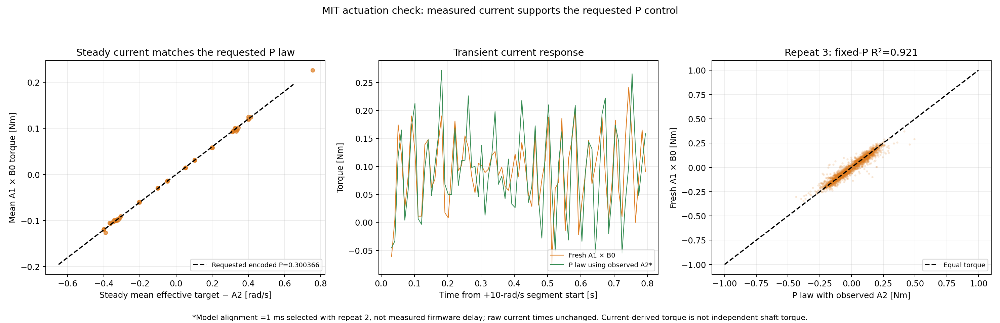

Rear MIT P versus C1 PI
MIT Kd≈0.30 is materially worse for small desired movements;
steady high-speed tracking retains about 0.33 rad/s bias.
Report · All figures PDF ·
Steady results · Sine results ·
Raw audit · Current-law check
MIT's small steady targets produce almost no travel; large targets retain a bias.

SVG · PDF
Sine response amplitude

SVG · PDF
Sine error and mean bias

SVG · PDF
Near-zero commands: current exists while displacement barely changes under MIT.

SVG · PDF
Current response supports the P-control/friction explanation.

SVG · PDF